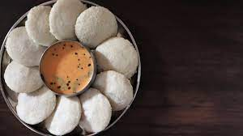

Idli

Description
A popular South Indian steamed breakfast dish which is made with the combination of rava (semolina) and yogurt.
Ingredients
- 2 tablespoons vegetable oil
- ½ teaspoon mustard seed
- ½ teaspoon cumin seeds
- 1 teaspoon split Bengal gram (chana dal)
- 10 fresh curry leaves
- 1 dried red chile pepper, crushed
- 1 tablespoon cashews, crushed
- 1 teaspoon minced fresh ginger root
- 1 teaspoon diced green chile pepper
- ¼ teaspoon asafoetida powder (hing)
- 1 cup semolina (sooji rava)
- ½ cup yogurt
- 2 tablespoons carrots, chopped
- salt to taste (optional)
- 1 teaspoon fruit salt (such as Eno®)
Steps
-
Heat vegetable oil in a pan over medium-low heat.
Add mustard seeds, cumin seeds, and chana dal and saute for a few seconds.
Add curry leaves, dried red chile, cashews, ginger, green chile peppers,
and hing and saute until cashew nuts turn slightly brown, 3 to 4 minutes.
Add semolina and cook and stir over low heat until slightly browned;
remove mixture to a plate and let cool completely, about 10 minutes.
-
Add yogurt and carrot to the mixture and mix well.
Add water as needed to reach desired consistency.
Season with salt to taste. Cover and let sit for 15 minutes.
Check batter consistency again; add more water if needed.
- Grease an idli pan and add water to steam; bring to a boil.
- Meanwhile, add fruit salt to the batter, mix well, and then pour the batter in the greased molds.
- Steam the idli for 10 minutes. Remove the idli from the molds and serve.